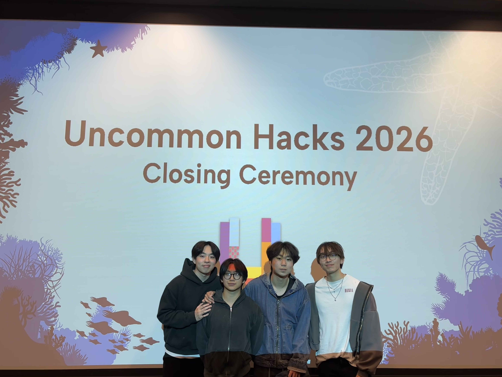
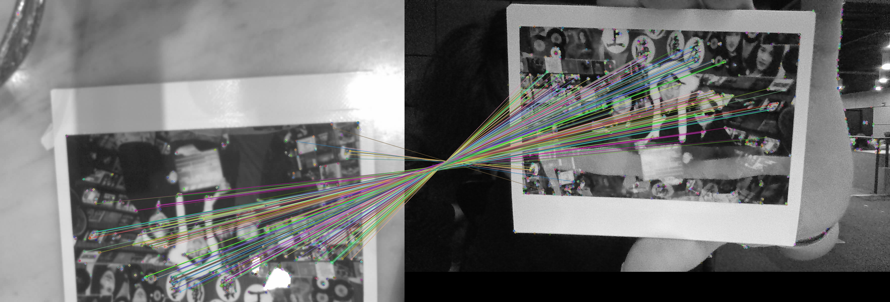
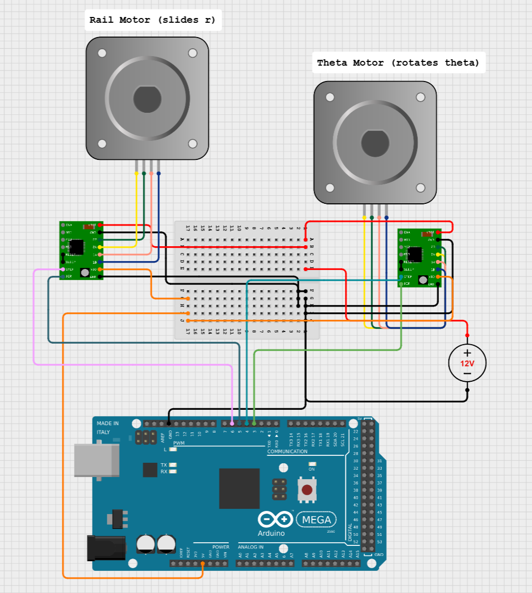
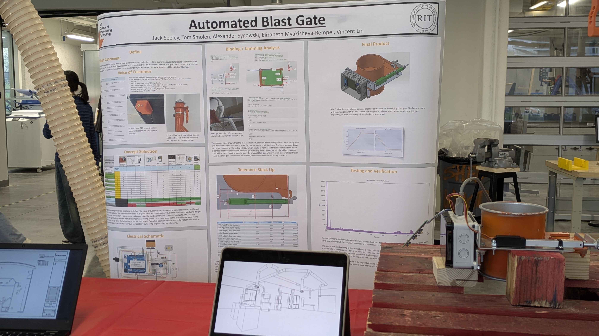
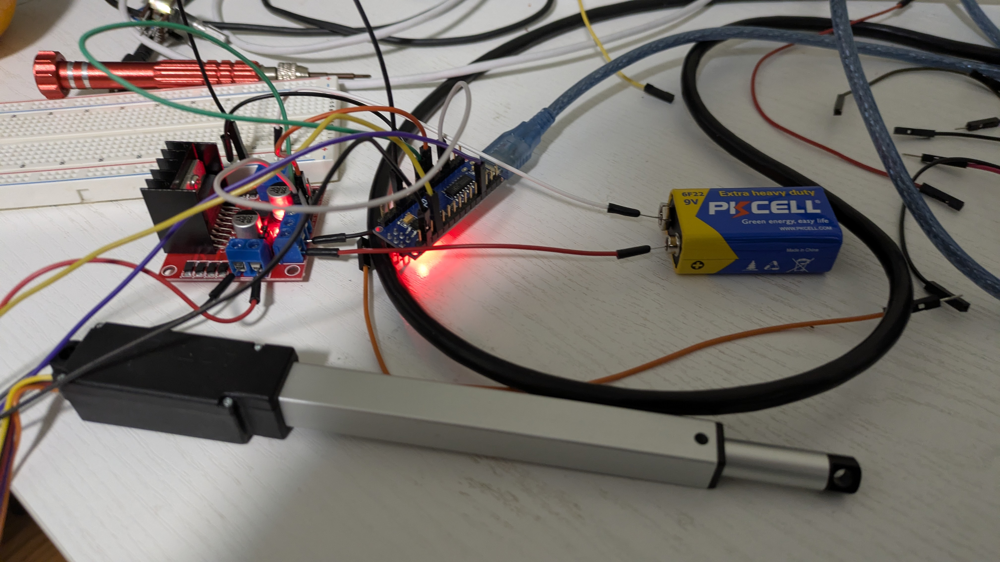
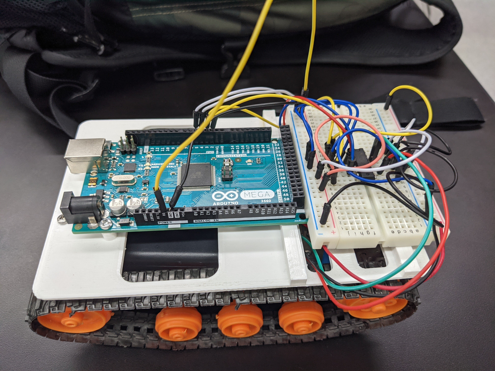

PROJECTS / SELECTED WORK
[ 001 / FEATURED BUILDS ]
PROJECT 01
LifeStory - Memory Record Player
UncommonHacks '26 1st Place Winner using both Meta's DINOv3 embedding model and ORB feature matching algorithm.


PROJECT 01 · MAY 2026 — PRESENT
Physical to Digital Photo Match
A physical feature that allows Alzheimers patients to identify and interact with digital images of their memories.
OVERVIEW
LifeStory is a web-app diary that allows Alzheimer's patients to remember their past experiences through interactive voice-narrated digital memories.
But a caretaker needs to upload, select, and replay those memories for them. What if patients could directly interact with it? With no technical literacy needed?
What if we took something they're used to, like a physical photo album and made it a portal to their digital memories.
Take a photo from your album, slide it underneathe a camera, and memories start flooding back. Like a record player, but for your life story.
SYSTEM ARCHITECTURE
- Family members upload digital photos and biographies through the LifeStory web app
- Each memory is stored in a chapter with context and voice narration
- A caretaker manages the digital memories and selects appropriate ones for the patient
- An ESP32-S3 CAM microcontroller acts as the physical album scanner, providing a direct interface
- Patient places a
IMAGE MATCHING PIPELINE
- ESP32S3 hosts a live camera web server at full 2MP resolution to capture images
- Python script continuously pulls jpeg frames from web server
- Generate DINOv3 embeddings to rank visually similar digital images to physical photo
- Detect ORB keypoints and compute binary descriptors for physical image and each digital candidate
- Calculate brute-force hamming distance between descriptors to find top feature matches
- Use Lowe’s ratio of 0.80 and RANSAC homography for outlier rejection
- Return highest ORB/RANSAC match, then output keypoint matches, inlier counts, and DINOv3 similarity
TOOLCHAIN
- OpenCV and PyTorch for computer vision processing
- Arduino IDE for ESP32S3 development
DEVPOST
- Full Devpost can be found here: https://devpost.com/software/lifestory
PROJECT 02
Automated SVG Sisyphus Table
A polar CNC sand table driven by a custom SVG-to-G-code converter, Nano firmware, and Python serial bridge for live pattern streaming.
PROJECT 02 · MAR 2026 — PRESENT
Automated SVG Sisyphus Table
A polar coordinate CNC machine that draws patterns in sand using a magnetically-coupled steel ball — driven by a fully custom toolchain from SVG to motor torque.
OVERVIEW
The Sisyphus table converts vector artwork into mesmerizing sand patterns. I designed the entire system end-to-end: the math that maps an SVG into polar coordinates, the firmware that drives the steppers, and the Python bridge that streams live commands over serial.
HIGHLIGHTS
- Built a custom SVG-to-polar coordinate converter using NumPy and coordinate geometry
- Developed C++ firmware on Arduino Nano to drive NEMA17 steppers
- Designed and verified the full motor control schematic in CirkitDesigner
- Python serial bridge streams motor commands live from a terminal
- NEMA17 steppers move the steel ball to trace out the SVG patterns
STACK
- Arduino Nano · NEMA17 stepper motors
- C++ firmware · Python serial bridge
- CirkitDesigner IDE for schematic verification
ELECTRICAL SCHEMATIC
Two NEMA17 steppers run the polar axes — one slides the radial rail, the other rotates theta — each driven by its own A4988 driver off a shared 12V supply, with all step/direction lines fanned out from an Arduino Mega.

PROJECT 03
PACK-E
A real-time object detection and retrieval robot running a fine-tuned FOMO model on ESP32-S3, with ultrasonic sensing and UART inference feedback.
PROJECT 03 · MAR 2026 — PAUSED
PACK-E
Package Acquisition & Collection Kernel Earth-Class. Autonomous object detection and retrieval by squeezing a TinyML pipeline onto a $15 microcontroller.
OVERVIEW
PACK-E identifies small target packages from a camera feed, navigates to them, and retrieves them — all without any external processing. The full vision and control loop runs on an ESP32-S3 CAM, while the MSP432 robot chassis handles the motor controls.
ARCHITECTURE
- Fine-tuned FOMO model using an optimized TensorFlow Lite Micro inference engine on ESP32-S3 CAM
- Bare-metal C firmware on MSP432 for motor control, ultrasonic sensing, and UART feedback
- ESP32 computes error from centroid location to frame center, then sends a navigation command to MSP432 via UART
- HC-SR04 gauges distance to target and MSP432 adjusts forward velocity accordingly
- Status: paused — physical chassis is at school
TOOLCHAIN
- Arduino IDE
- Code Composer Studio
- Edge Impulse
PROJECT 04
Automated Blast Gate Network
Electrical/Embedded Systems lead on a fleet of "smart" blast gates for the SHED Wood Shop. Precise closed-loop positioning, broadcast UART protocol, and locally-computed flow balancing across nodes. Designed to be minimally invasive.
PROJECT 04 · JAN — MAY 2026
Automated Blast Gate Network
A fleet of "smart" blast gates for the RIT SHED Wood Shop — gates that talk to each other and balance vacuum flow with no central controller in the loop.
OVERVIEW
I led the electrical and embedded side of this build, designing the closed-loop positioning system, the UART communication protocol between nodes, and the flow-balancing equation that runs locally on each gate. The result: a network where each gate makes its own decisions based on broadcast state.
HIGHLIGHTS
- Designed and manufactured smart blast gates to optimize vacuum flow and UX in the Wood Shop
- Built a closed-loop positioning system using L298N drivers and linear actuator feedback
- Established Nano-ESP32 communication via 8N1 UART broadcast
- Devised a single-byte broadcast architecture for distributed flow balancing
STACK
- Arduino Nano · ESP32 · L298N motor drivers
- Linear actuators with position feedback
- Custom 8N1 UART broadcast protocol
PRESENTED AT IMAGINE RIT
Our team showcased the Automated Blast Gate Network at Imagine RIT, RIT's annual creativity and innovation festival, demoing the live system to visitors right in the SHED Wood Shop where it runs.


INITIAL PROTOTYPES
Before any of the gates were manufactured, I bench-tested a single node end to end: an Arduino Nano driving a linear actuator through an L298N H-bridge, with position feedback closing the loop. This breadboard rig was where the closed-loop positioning and UART messaging were first proven out.

PROJECT 05
RC Tank & Bluetooth Bridge
Fully CADed, 3D-printed analog joystick tank platform. Custom H-bridge driver built from P-MOS / N-MOS for all four motion states, with HC-05 Bluetooth and I²C telemetry.

PROJECT 05 · AUG 2021 — MAY 2022
RC Tank & Bluetooth Bridge
My first real mechatronics build. Custom-designed chassis, custom H-bridge driver from discrete MOSFETs, custom controller — every layer from mechanical to firmware was hand-rolled.
OVERVIEW
I CADed and 3D-printed the analog joystick controller and the tank chassis, then designed a discrete H-bridge from P-MOS and N-MOS transistors for all four motion states. The two halves talk over HC-05 Bluetooth, and I added I²C telemetry to monitor the tank's state.
HIGHLIGHTS
- Designed a custom H-bridge motor driver using P-MOS and N-MOS for coasting, steering, braking, and reversing
- Modeled and 3D-printed the joystick controller and tank chassis from scratch
- Programmed the tank in Arduino C, with I²C protocol for sensor data and HC-05 for wireless command
- First project that mixed mechanical, electrical, and firmware in one system
STACK
- Arduino Mega · Arduino Uno, controller / chassis
- Discrete P-MOS / N-MOS H-bridge
- HC-05 Bluetooth module · I²C telemetry